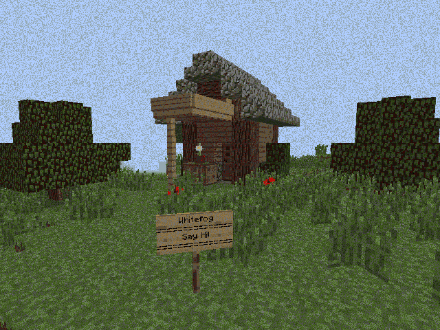

O Rabbit Hole da Geração de Mapas para jogos Roguelikes utilizando LLMs 🌍🔄🤖
Ambientação 🌿
Escute a música e veja a image para se ambientar.

Brainstorm 🧠💡
Aqui irei criar uma bullet list com diversos temas e tópicos que precisam
ser abordados. É um rascunho ou uma promessa de coisas que podem ser
debatidas.